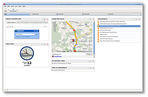
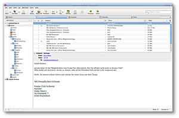
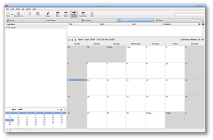

Spicebird
Archivierte Anleitung
Dieser Artikel wurde archiviert, da er - oder Teile daraus - nur noch unter einer älteren Ubuntu-Version nutzbar ist. Diese Anleitung wird vom Wiki-Team weder auf Richtigkeit überprüft noch anderweitig gepflegt. Zusätzlich wurde der Artikel für weitere Änderungen gesperrt.
Anmerkung: Das Programm basiert auf veralteten Versionen von Thunderbird. Die Entwicklung wurde eingestellt.
Zum Verständnis dieses Artikels sind folgende Seiten hilfreich:
Spicebird  ist ein plattformübergreifender und freier Personal Information Manager (PIM). Das Programm bietet eine klassische E-Mail- und Kontaktverwaltung, unterstützt aber zusätzlich die Integration von Kalendern und Aufgabenlisten sowie das Lesen von RSS-Feeds. Interessant ist die Möglichkeit, Google Gadgets einzubinden. Entwickelt wurde das Programm auf Basis der Quelltexte von Mozilla Thunderbird (Version 2) und Lightning. Auch Instant Messaging (Yahoo, AIM, ICQ und XMPP (Jabber)) wird via Telepathy unterstützt. Somit ist Spicebird vergleichbar mit Microsoft Outlook und den freien Pendants Evolution und Kontact.
ist ein plattformübergreifender und freier Personal Information Manager (PIM). Das Programm bietet eine klassische E-Mail- und Kontaktverwaltung, unterstützt aber zusätzlich die Integration von Kalendern und Aufgabenlisten sowie das Lesen von RSS-Feeds. Interessant ist die Möglichkeit, Google Gadgets einzubinden. Entwickelt wurde das Programm auf Basis der Quelltexte von Mozilla Thunderbird (Version 2) und Lightning. Auch Instant Messaging (Yahoo, AIM, ICQ und XMPP (Jabber)) wird via Telepathy unterstützt. Somit ist Spicebird vergleichbar mit Microsoft Outlook und den freien Pendants Evolution und Kontact.
Die Betaversion 0.7 von Spicebird war nur zum Testen gedacht und nicht für den produktiven Einsatz vorgesehen. Die E-Mail Komponente basiert hier noch auf Thunderbird 2. Mitte 2010 ist eine neue Version 0.8 erschienen, die nun auf Thunderbird 3 basiert.
Installation¶
Manuell¶
Man lädt sich die gepackte Installationsdatei  herunter und entpackt [1] das .tar.bz2-Archiv ins Verzeichnis /opt (zur systemweiten Nutzung) oder ~/bin (für den aktuellen Benutzer). Für die Version 0.7 gab es eine deutsche Sprachdatei, die separat via .xpi-Datei als Erweiterung installiert werden konnte. Eine entsprechende Erweiterung für die aktuelle Version 0.8 ist nicht verfügbar.
herunter und entpackt [1] das .tar.bz2-Archiv ins Verzeichnis /opt (zur systemweiten Nutzung) oder ~/bin (für den aktuellen Benutzer). Für die Version 0.7 gab es eine deutsche Sprachdatei, die separat via .xpi-Datei als Erweiterung installiert werden konnte. Eine entsprechende Erweiterung für die aktuelle Version 0.8 ist nicht verfügbar.
Für deutschsprachige Nutzer interessant ist auch ein entsprechendes Wörterbuch . Zum Wechseln des Wörterbuchs wird noch der DictionarySwitcher benötigt. Erweiterungen können nach dem Herunterladen Mozilla-üblich installiert werden, beispielsweise über "File -> Open".
Hinweis:
Die beiden genannten Erweiterungen bitte über die rechte Maustaste speichern - es sind KEINE Firefox-Addons.
Deinstallation¶
Möchte man Spicebird deinstallieren, kann man einfach den Installationsordner löschen. Persönliche Daten werden im Ordner ~/.spicebird gespeichert. Bei einer Deinstallation muss dieser Ordner von Hand entfernt werden.
Benutzung¶
|  |
| Startseite |
|  |
|  |
| Kalender |
Jetzt kann Spicebird mit /opt/spicebird-beta/spicebird bzw. ~/bin/spicebird-beta/spicebird gestartet werden [3]. Optional kann ein Menü-Eintrag erstellt werden [4]. Die Benutzung ist stark verwandt mit den Ursprungsprogrammen Mozilla Thunderbird (siehe e-Mail-Konten einrichten unter Thunderbird) und Lightning (Kalender). Als weitere Hilfestellung wird eine Video-Anleitung angeboten.
Neu ist - im Vergleich zu den oben genannten Programmen - der Reiter "Start". Dieser fasst Aufgaben, (neue) E-Mails und RSS-Feeds übersichtlich zusammen und ermöglicht so einen praktischen Überblick, bevor man sich einzelnen Bereichen widmet. Zusätzlich findet sich hier eine Weltzeituhr (bei Bedarf mit unterschiedlichen Zeitzonen) und ein Google-Gadget zur komfortablen Wikipedia-Nutzung.
Alle Elemente der Startseite sind in Blöcken organisiert und können beliebig umsortiert (oder entfernt) werden. Neue Blöcke können über die Schaltfläche "Applet hinzufügen" eingefügt werden. Zur Auswahl stehen:
Kalender
Agenda
Google Applet
RSS Feed
Nachrichtenordner
Datum & Zeit
Speziell mit den Google Gadgets stehen sehr umfangreiche Möglichkeiten zur Verfügung, sich eine echte Alternative zur Tageszeitung (aktuelle Nachrichten, Wetter, Sport usw.) zusammenzustellen - analog zu iGoogle  . Dazu sucht man sich dort ein Applet aus (bis zum jeweiligen Applet durch klicken) und kopiert die Adresse (URL) in das Feld "Applet Adresse". Einziger Wermutstropfen: leider können nicht alle verfügbaren Applets problemlos integriert (oder konfiguriert) werden.
. Dazu sucht man sich dort ein Applet aus (bis zum jeweiligen Applet durch klicken) und kopiert die Adresse (URL) in das Feld "Applet Adresse". Einziger Wermutstropfen: leider können nicht alle verfügbaren Applets problemlos integriert (oder konfiguriert) werden.
Auf weiteren Reitern stehen die Funktionen "Nachrichten", "Kontakte", "Kalender" und "Aufgaben" zur Verfügung.
Instant Messaging¶
Spicebird unterstützt diverse Instant Messenger (IM) Dienste. Chat-Funktionen werden innerhalb der Kontakte benutzt. Im Hauptmenü unter "Chat" werden eigene Konten konfiguriert und der Status festgelegt. Die wichtigsten Messenger-Dienste sind vorhanden (ICQ, XMPP (Jabber), MSN und Yahoo Messenger), aber IRC ist nicht möglich. Über den Eintrag (links) "Chat Contact Lists" findet man später eine Auflistung der Gesprächspartner.
Ist eine Verbindung erfolgreich aufgebaut, kann in einem separaten Fenster gechattet werden. Über ein Symbol rechts oben wird dieses Fenster zu einem Reiter in Spicebird.
Datenmigration¶
Thunderbird-Daten importieren¶
Beim ersten Start wird angeboten, Konten aus Thunderbird (falls vorhanden) zu importieren. Da Spicebird auf Thunderbird und dessen Kalendererweiterung "Lightning" basiert, können Adressbücher, E-Mails und Kontaktdaten sehr leicht übernommen werden.
Neues Konto einrichten¶
Wenn auf den Import verzichtet wird, wird als nächstes das Anlegen eines neuen Kontos angeboten. Zur Auswahl stehen:
E-Mail-Konto
Unix Mailspool (Movemail)
Blog account
RSS-Konto
Newsgruppen-Konto
Google-Konto
Adressbuch importieren¶
Spicebird bietet die Möglichkeit, Adressbücher im LDIF, .tab, .csv, .txt Format zu importieren.
Links¶
addons.spicebird.org
- offizielle Erweiterungsseite
Spicebird als PIM
- Blogbeitrag 04/2009Spicebird: Salz in der PIM-Suppe
(07/2009)
- Erstellt mit Inyoka
-
 2004 – 2017 ubuntuusers.de • Einige Rechte vorbehalten
2004 – 2017 ubuntuusers.de • Einige Rechte vorbehalten
Lizenz • Kontakt • Datenschutz • Impressum • Serverstatus -
Serverhousing gespendet von